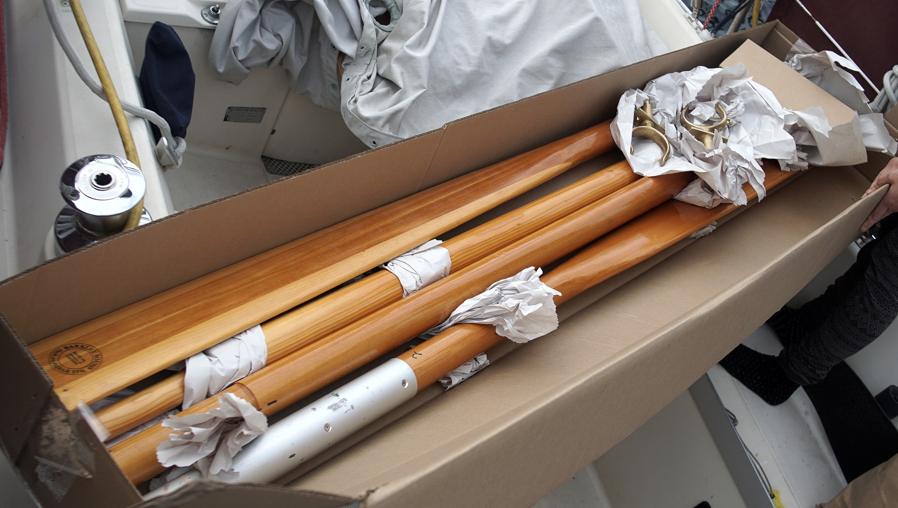

oars
We keep a set of oars aboard pino, they are 4.5m (15 ft) long, made from Sitka Spruce and laminated with TITEBOND 3 glue. They are designed to collapse in two and connect by way of an aluminum sleeve. These oars are typically commissioned, and used by the Canadian Coastguard. We have two beefy brass oar locks that we plan to affix to the boat.
Why oars?
Inspired by the engine-less propulsion techniques employed by sailors of The Race to Alaska, we got ourselves a pair of oars. The goal or having oars is to keep us moving on windless days, without having to rely entirely on our combustion engine. We don't know how much speed we can do, as we haven't installed them yet. We will report back with this information soon.
The goal of rowing a sailboat is not speed or efficiency. It does not replace an inboard engine, but it is a simple, and timeless way of keeping a vessel moving when there is no weather, or current. It's also a great way to combat restlessness.
Stern-sculling vs sculling with 2 oars
Our first idea was to installing an oar mounted at the stern (stern sculling), which we'd use to propel the boat with side-to-side movements that create forward lift in the water.
We spoke to the owner of Barkley Sound Oar and Paddle about our plans. He had built oars for boats in the R2AK in the past, and suggested sculling with two oars instead. We saw the start of the R2AK in 2016 in Victoria. We'd seen boats propelled by two oars, and others with a stern-mounted oar, and remembered that the ones propelled by two oars had better forward motion.
Entranced with the idea, we asked him if we could commission some oars. He told us he no longer made the type of oar we wanted because it wasn't economically viable... BUT, he had ONE such pair left in his shop. He kept those oars for himself to use on a boat, but he never did, and offered to sell them to us. We were lucky to get a pair.
We plan to install stretchy lines from the mast to the oars, to make it easier to row. The lines would help with forward pulling.
Timeline
06-05-21. Received oars and oar locks from Barkley Sound Oar and Paddle.